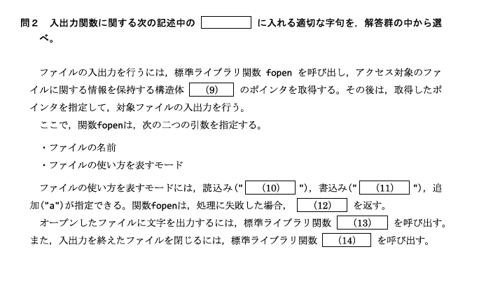
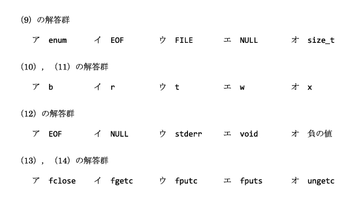
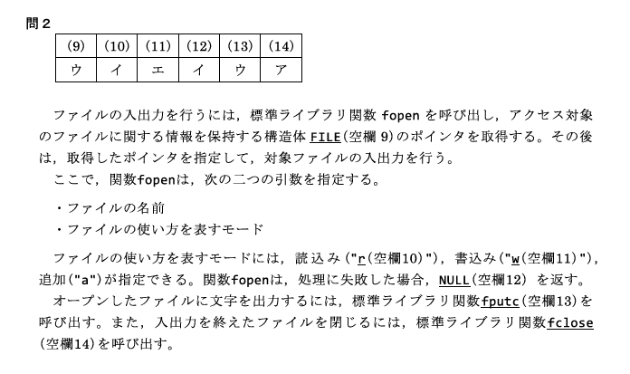
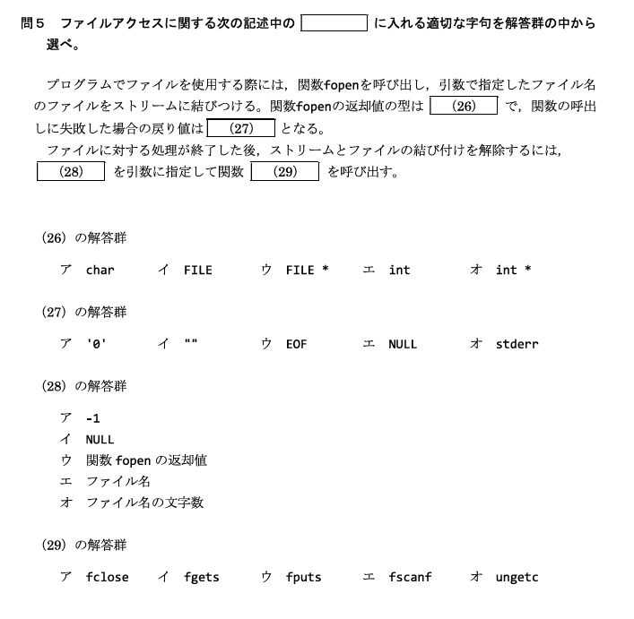
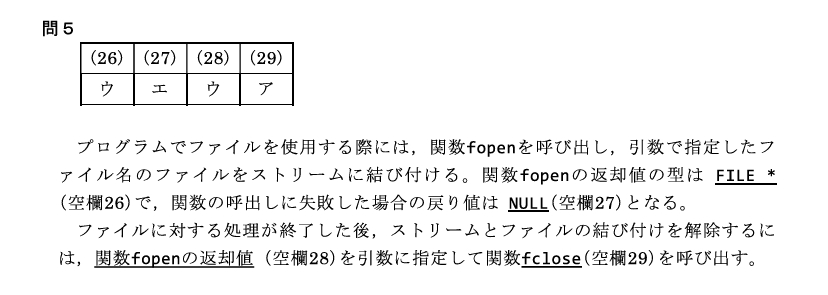

プログラムが扱うデータは、実行が終わると消えてしまう。データをファイルに書き出せば、次に起動したときも読み戻せる。C言語ではファイルを FILE という構造体へのポインタで扱い、fopen で開いて読み書きし、fclose で閉じる。2級ではこの一連の流れと、'¥0'・EOF・NULL の区別がよく問われる。
struct が「異なる型をひとまとめにする箱」だと説明できる ② FILE *fp; と fopen のモード r/w/a・失敗時 NULL が分かる ③ fputc(書き込み)/fgetc(読み込み)/EOF/fclose で1文字ずつ読み書きできる。
ファイルの話の前に「構造体」を少しだけ。ここではざっくり理解して、ファイルアクセスへ進んでほしい。
構造体（struct）は、異なる型のデータをひとまとまりにして扱うデータ構造である。配列が「同じ型を並べる箱」だったのに対し、構造体は「種類の違うデータを1つにまとめる箱」だと考えるとよい。C言語では struct キーワードを使って定義する。
struct FileData {
char filename[50]; /* 文字列（char 配列）*/
int size; /* 整数 */
};この例では、filename（文字列）と size（整数）という異なる型を持つ FileData という構造体を定義している。
struct FileData file = {"example.txt", 1024};
printf("ファイル名: %s, サイズ: %d¥n", file.filename, file.size);中身の各メンバには file.filename・file.size のように ドット . でアクセスする。
FILE が標準ライブラリ <stdio.h> であらかじめ定義されている。私たちが FILE の中身を直接いじることはほとんどなく、その「アドレス（ポインタ）」を fopen から受け取って使うだけでよい。
struct にメソッド（関数）を持たせることで、クラスと同様に扱える。「C++ のクラスを習うと、その正体は構造体の進化形だった」とつながる。
C言語では、標準ライブラリを利用してファイルの読み書きを行うことができる。これは、私たちが本棚から本を取り出す → 開く → 読み書きする → 閉じる → 本棚へしまう、という動作とよく似ている。
| 本棚のイメージ | C言語の関数 |
|---|---|
| 本を取り出して開く | fopen()（ファイルを開く） |
| 本に書き込む | fputc() など（書き込み） |
| 本を読む | fgetc() など（読み込み） |
| 本を閉じて棚へしまう | fclose()（ファイルを閉じる） |
主に fopen() 関数でファイルを開き、fclose() 関数で閉じる。開いたら必ず閉じるのが基本である。
ファイル操作には、FILE 構造体へのポインタを使用する。
FILE *fp;このポインタは fopen() によって取得し、以降のファイル操作（読み書き・クローズ）すべてで「どのファイルか」を表す合言葉として使う。
FILE *fp; の * は「FILE 構造体を指すポインタ」という意味。fp 自体はファイルの実体ではなく、ファイルの場所を指す“しおり”のようなものだと考えるとよい。
fopen() 関数はファイルを開くために使用され、成功すると FILE 型のポインタを返す。
FILE *fopen(const char *filename, const char *mode);filename：開くファイルの名前。mode：ファイルのオープンモード（後述の "r"/"w"/"a"）。FILE *fp;
fp = fopen("example.txt", "r");
if (fp == NULL) {
printf("ファイルを開けません¥n");
return 1;
}| モード | 意味 | 説明 |
|---|---|---|
"r" | 読み込み（read） | ファイルが存在しない場合はエラー（NULL） |
"w" | 書き込み（write） | 新規作成または上書き（既存の中身は消える） |
"a" | 追記（append） | 末尾に追加。ファイルがなければ新規作成 |
"w" は「新規作成または上書き」。既にあるファイルを "w" で開くと、元の中身は消える点に注意。中身を残して足したいときは "a"（追記）を使う。
fopen は失敗すると NULL を返す（存在しないファイルを "r" で開いた、権限がない 等）。直後に if (fp == NULL) でチェックしてから読み書きするのが鉄則。チェックせず NULL のまま使うと暴走する。
fclose() 関数は、開いたファイルを閉じる。
int fclose(FILE *fp);fclose(fp);fputc() は、1文字をファイルに書き込む関数である。ファイルへ c（char：文字）を put（置く） と考えるとよい。
int fputc(int c, FILE *fp);#include <stdio.h>
int main(void)
{
FILE *fp;
fp = fopen("output.txt", "w"); /* 書き込みモードで開く */
if (fp == NULL) {
printf("ファイルを開けません¥n");
return 1;
}
fputc('A', fp); /* 1文字 'A' を output.txt に書き込む */
fclose(fp);
return 0;
}このプログラムを実行すると、output.txt の中身は A の1文字だけになる。
fgetc() は、1文字をファイルから読み取る関数である。ファイルから c（char：文字）を get（得る） と考えるとよい。
int fgetc(FILE *fp);char ではなく int。fgetc は読み取った文字に加えて、ファイルの終わりを示す EOF（負の値、ふつう -1）も返すことがある。char で受けると EOF と区別できず、読み取り終了を正しく判定できない。だから戻り値は int 型で受ける。
ファイルの終端を示す特殊な値 EOF は、ファイル読み取りの終了を判定するために使う。「もう読む文字がない」という合図である。
#include <stdio.h>
int main(void)
{
FILE *fp;
int c; /* fgetc の戻り値を受けるので int（EOF と比較するため）*/
fp = fopen("example.txt", "r");
if (fp == NULL) {
printf("ファイルを開けません¥n");
return 1;
}
while ((c = fgetc(fp)) != EOF) { /* EOF が来るまで1文字ずつ */
printf("%c", c); /* 読んだ文字を画面に表示 */
}
fclose(fp);
return 0;
}while ((c = fgetc(fp)) != EOF) は「1文字読んで c に入れ、それが EOF でない間くり返す」という超頻出パターン。c を int で宣言するのは EOF と正しく比べるため。
fopen() が失敗した場合は NULL を返す。NULL は「どこも指していない」ことを表す特別なポインタの値である。
FILE *fp;
fp = fopen("nonexistent.txt", "r"); /* 存在しないファイルを読み込みで開こうとする */
if (fp == NULL) {
printf("ファイルが開けません¥n");
}'¥0'（ヌル文字）＝文字列の終わりEOF＝ファイル（入力）の終わりNULL＝どこも指さないポインタ（fopen 失敗時の戻り値）





struct は異なる型をひとまとめにする箱。C++ のクラスの元。FILE も構造体。fopen）→ 読み書き → 閉じる（fclose）。FILE *fp; で扱う。fopen のモード："r"=読み込み／"w"=書き込み（新規作成または上書き）／"a"=追記。失敗すると NULL。fputc=1文字を put（書き込み）／fgetc=1文字を get（読み込み）。fgetc の戻り値は int（EOF と比較するため）。'¥0'＝文字列の終わり／EOF＝ファイルの終わり／NULL＝どこも指さないポインタ。